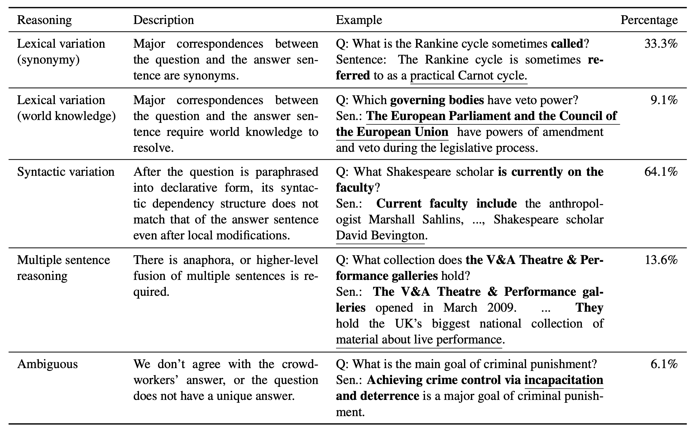

Introducing SQuAD2.0
Contents
Introducing SQuAD2.0#
What is the SQuAD2.0 Dataset?#
The SQuAD (Stanford Question Answering Dataset) dataset, introduced by the stanford NLP group, is a dataset released in 2016 containing over 100,000 reading comprehension questions. The answer to a given question in the dataset is an extract of the text taken directly from the context paragraph. Therefore, SQuAD systems do not need to generate the answer text. They have to select the correct span of text from the context paragraph. Below is an example of a <question, context paragraph, answer> triple.
Example of a <question, context paragraph, answer> triple.
Context Paragraph : Computational complexity theory is a branch of the theory of computation in theoretical computer science that focuses on classifying computational problems according to their inherent difficulty, and relating those classes to each other. A computational problem is understood to be a task that is in principle amenable to being solved by a computer, which is equivalent to stating that the problem may be solved by mechanical application of mathematical steps, such as an algorithm.
Question : By what main attribute are computational problems classified utilizing computational complexity theory?
Answer : inherent difficulty
In 2018, addressing the fact that extractive reading compreshension systems tend to make unreliable guesses on questions where the correct answer is not stated in the context, the SQuAD2.0 dataset [RJL18] was released. SQuAD2.0 adds over 50,000 unanswerable questions written adversariliy to look similar to answerable ones. Therefore, in order to perform well on SQuAD2.0 systems must also be able to determine when no answer is available in the question’s context paragraph.
Dataset Collection#
The SQuAD2.0 dataset contains paragraphs from wikipedia where the questions and answers where crowdsourced using Amazon Mechanical Turk.
Dataset Evaluation#
Performance is measured via two metrics. F1 score and Exact Match (EM) score.
F1 takes the harmonic mean of precision and recall.
EM is a binary measure to whether the models output matches the ground truth answer exactly.
When evaluating on the dev and test set, the maximum F1 and EM score across all three human-provided answers is taken.
